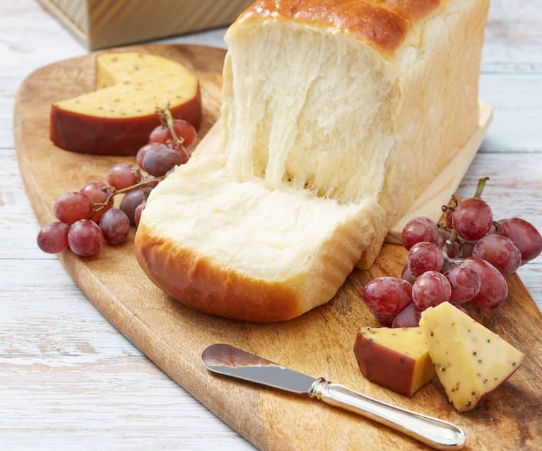

Milk Bread

Description
THIS TEXT IS PLAIGARIZED FROM THE WOKS OF LIFE
This Asian milk bread recipe is a triumph. I’m not
exaggerating when I tell you that for months, we’ve
searched, tested, and failed time and time again
to nail down a perfect recipe for soft, buttery,
fluffy milk bread. Until that is, when we finally
did it!
Milk bread is an Asian style of soft, buttery, and
slightly sweet bread. There are variations in Japan
(where it’s known as shokupan) as well as China.
In Chinese bakeries, you’ll find milk bread in
various forms: loaves, sliced, pull-apart buns, and
as the basis for a wide variety of Hong Kong Style
bakery buns.
Ingredients
- 2/3 cup heavy cream
- 1 cup milk
- 1 large egg
- 1/3 cup sugar
- 4 cups all-purpose flour
- 1 tablespoon active dry yeast
- 1 1/2 teaspoons salt
- Egg wash
- Simply Syrup
Steps
- In the bowl of a stand mixer fitted with a dough hook attachment, add the ingredients in the following order: heavy cream, milk, egg, sugar, cake flour, bread flour, yeast, and salt. Turn on the mixer to “stir,” and knead for 15 minutes, occasionally stopping the mixer to push the dough together. If the dough is sticking to the sides of the bowl, add a little more flour 1 tablespoon at a time until it pulls away from the sides (it should be sticking to the bottom of the mixing bowl, but not the sides). If kneading by hand, extend the kneading time by 5-10 minutes.
- Next, cover the dough with a damp towel, and place in a warm spot until the dough has doubled in size (1-2 hours). We proof our dough in a closed microwave with a mug of just-boiled water next to it.
- In the meantime, grease two baking vessels on all sides with butter. You can use two standard loaf pans, two 9-inch (23cm) round pans, or 1 loaf pan and 1 round pan.
- After the dough has doubled in size, put it back in the mixer, and stir for another 5 minutes to get rid of air bubbles. Dump the dough on a lightly floured surface, and cut it in half. To make loaves, shape each dough half into a rough rectangular shape, cut it cross-wise into three roughly equal pieces, and place in the loaf pan. Alternatively you can cut each dough half into 8 pieces, roll them into balls (or ropes that you can twist into buns), and put them in a round pan. You can also make 2 loaves, 16 rolls, or 1 loaf and 8 rolls. Once shaped, let the dough proof, covered, for another hour.
- Position a rack in the center of the oven, and preheat it to 350° F/175°C. Brush the risen dough with egg wash. Bake for 23-25 minutes, or until golden brown. Remove from the oven and brush the warm bread with sugar water to give it shine and sweetness.